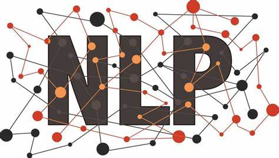
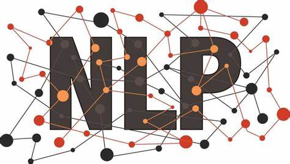

Portfolio
Crypto Prediction
Comparison between Deep Learnign (DL) and Machine Learning (ML) techniques for cryptocurrency price prediction, using Gradient Boosting Enssemble (GBE) as of ML and Long Short Term Memory (LTSM) as for DL artificial neural networks.
- Python
- Pandas
- SciKit
- Tensorflow
- APIs
News Categorisation
Extract topics for the news published in website and classify incoming news under one of the extracted topics. This project involves both, supervised and unsupervised learning, by first using Latent Dirichlet Allocation (LDA) to obtaining the topics (categories) to later classify incoming news using Support Vector Machine (SVM).
- Python
- Web Scrapping
- Natural Language Processing (NLP)
- Support Vector Machine (SVM)
- Latent Dirichlet Allocation (LDA)
Search Relevance
An investigation about how do search engines decides which of the result set that matches the search query is more relevant for the user that searches. Read this article to discover the existence of machine learning algorithms such as learning to rank which can use information about the user to offer a personalized rank for a specific algorithm. You will also discover how the query introduced by the user is processed and transformed into digital information which can be used to compare with a set of documents and decide the order of the documents based on relevance.
- Query Understanding
- Model Drift
- Boosting Ranking Algorithm
- Learnign to Rank Algorithm
- A/B testing
Tweets Sentiment
Creating a recurrent neural network which is able to detect if the sentiment of a tweet is negative, positive or neutral. The tweets come in two csv files (training and testing) which needs to be processed in order to arrange the tweets by sentiment and pre-process the text before training the network.
- Python
- Natural Language Processing (NLP)
- Tensorflow
- Recurrent Neural Networks (RRN)

Indoor Localization
Simulation of an Indoor Localization System inside a garage. The object to localize is emiting a signal which receiver nodes use to calculate the distance at which the object is, based on the strength of the signal. The final part of the project is a simulation of two vehicles trajectories using different density of receivers, to end up calculating the cost of implementation of such a system with the optimum number of nodes.
- Matlab
- Received Signal Strenght Indicator
- Indoor Localization System (ILS)
- Trianlgulation
- Min-Max Method
- Centroid algorithm
Expertise

 

About Me
I am a graduated engineer with an entrepreneurial mindset interested in digital products and enhancing users experience. My technical focus is on Artificial Intelligence and Data Analytics. Currently, I am employed by Banco Santander where I lead the implementation of Know Yor Customer (KYC) initiatives. On my free time you will find me socializing with friends, doing sports and traveling. Please download my resumé for a more detailed overview of my experience.
My Resume